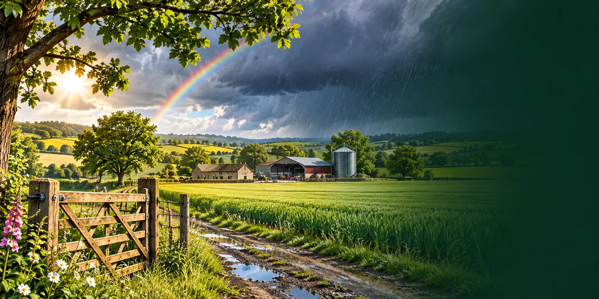

Random Event Generator
Add surprise, challenge and realism to your farm with random events.
Set Up Your Farm
Set this up once. Afterwards, use the Farm Settings button beside the generator.

Heavy Rain
Stop all fieldwork for 1 day.
Random Event Settings
Choose how many different events to generate together (maximum ten). You can also choose how often they're due.
Scheduled Farm Events
Set up your farm calendar to begin.
Events become active automatically. The same event cannot repeat within a month or while active. Generating an event does not advance time.
Leave off to generate random events whenever you like. Turn on to automatically track ongoing events and their gold progress bars.
Ongoing Farm Events
0 activeTime follows your Farming Simulator game, not the real-world clock. Advance time when it passes in your game.
Choose your current in-game month, day and number of days per month. You only need to do this once.
For discounts and bonuses: tap price buttons repeatedly to build the total (or enter an exact price), then choose the event percentage. Buy or sell at the in-game price, then use your Payment Farm to account for the difference.
Farm Event History
Completed events are filed under the month and year in which they began.
Your current event is remembered automatically.
Launch edition: events adapted from Farming Simulator 25: The Ultimate Gameplay Guide. One illustration per category; more events and images will follow.